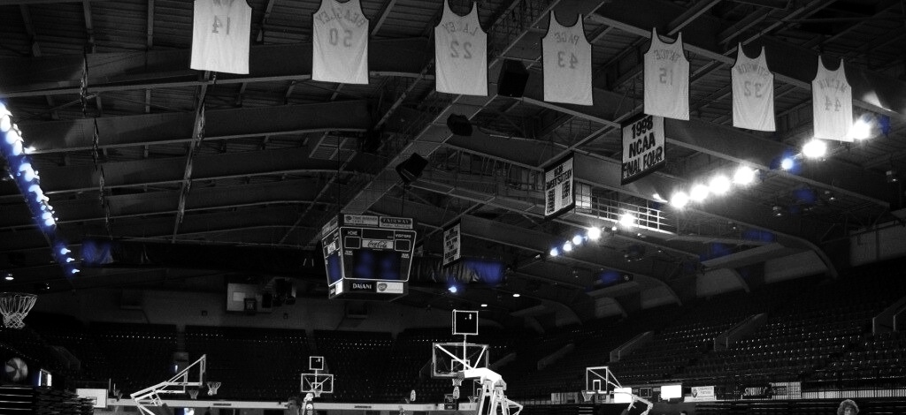
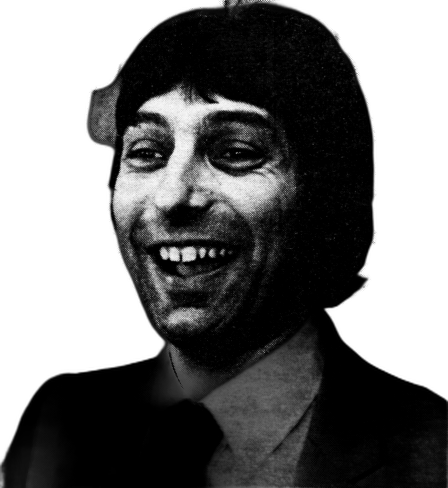
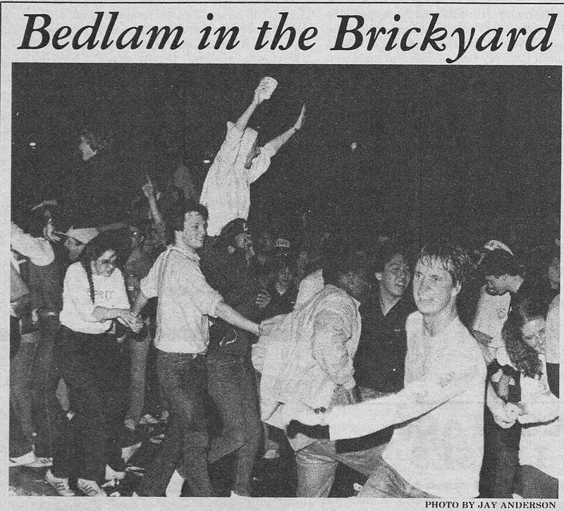

REYNOLDS COLISEUM, PABELLÓN DE NC STATE · FOTO (2007): GREENSTRAT, DOMINIO PÚBLICORECREACIÓN

JIM VALVANO
NC STATE · FOTO: THE CHRONICLE (DUKE), 1982 · D. P.

THE CHRONICLE (DUKE), 5/4/1983: RALEIGH CELEBRA LA FINAL · DOMINIO PÚBLICO
FINAL NCAA · 1983RECREACIÓN · SIN ESCUDOS
NC STATEvsHOUSTON
JIM VALVANO EN LA BANDA · THE CHRONICLE, 4/4/1983 · FOTO: JONATHAN WROBLEWSKI, D. P.
4 ABR 1983 · ALBUQUERQUEFINAL
NC STATE0 – 0HOUSTON
DE VERDAD
FOTOS: THE CHRONICLE (DUKE, 1982 Y 1983; JONATHAN WROBLEWSKI) · GREENSTRAT ·
DOMINIO PÚBLICO, VÍA WIKIMEDIA COMMONS · TIJERAS, ESCALERA, ARO, RELOJ Y MARCADOR: RECREACIÓN